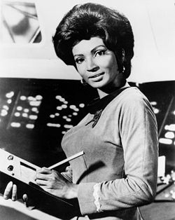
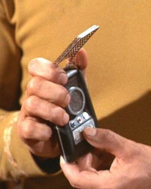
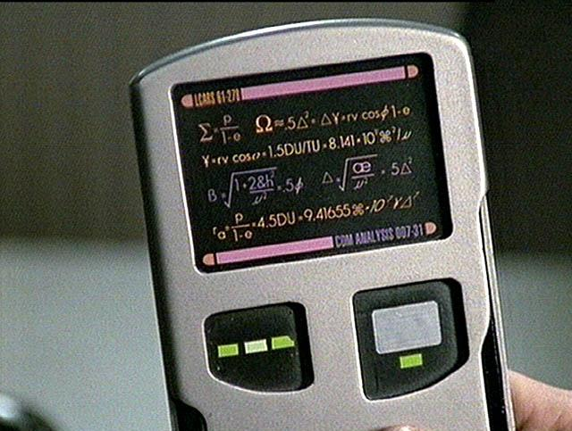
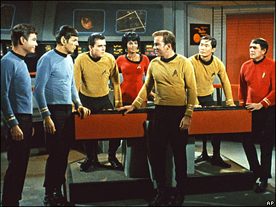

El valor de StarTrek
Whoopi Goldberg, cuenta que se sentía identificada con el personaje de Uhura de la serie Star Trek, ella recuerda haberle dicho a su familia: "¡acabo de ver a una mujer negra en televisión, y no era una sirvienta!".

Nichelle Nichols, la actriz que interpretaba a Uhura había decidido abandonar la serie después de la primera temporada, pero fue el propio Martin Luther King que le pidió que no lo hiciera, porque ella representaba un modelo positivo a seguir para las mujeres negras. La misma NASA le pidió que participara en campañas para motivar a afroamericanos a unirse a esta institución.
Uhura viene de la palabra zwahilli uhuru, que significa libertad. Soy un trekkie fanático, y aunque no llegué al extremo de ponerle a una de mis hijas Uhura, pero una se llama Francisca que denota el mismo concepto, el principal valor para mí.
No recuerdo cuando aprendí estas cosas sobre Uhura, tengo un par de libros que hablan sobre esta serie, y la he visto y la sigo viendo con frecuencia.
Hay gente que dice que nunca vió Star Trek porque no la entendían, está bien, eso puede ser, cuando eres pequeño, pero no es excusa para no verla ahora (la serie original y las que siguieron, no sólo la película de J.J. Abrams.
Yo creo que los que vimos Star Trek en los 70 aprendimos bastante, de un futuro positivo para la humanidad, donde la tierra ya abandonó la codicia y las diferencias entre razas y naciones.
Y además quedamos preparados para entender este mundo tecnológico actual.
Miren la foto de Uhura, que sostiene en sus brazos? ¿No es acaso un Tablet PC? ¿en 1967?
Y qué me dicen de esto:

Cuando tuve mi primer celular, un Nokia que se habría y tenía el mismo tamaño que el comunicador del Capitan Kirk.
Y que son las palms, las blackberries, o los iPhone, sino un tipo de PADD, como este:

Ejemplos, de tecnología, probablemente inspirada por esta serie son muchas:
- Tele conferencias
- Telefonía celular
- Dispositivos auriculares por bluetooth
- Pantallas tactiles
- Pantallas planas
- Sensores médicos
- El tablet PC
- Laptops
- Scanners
- Interfaz vocal para el computador
- El traductor universal (google language tools)
- El mismo Google funciona como la computadora de Spock
- Email, por supuesto (y multimedia)
- Pantallas de plasma o lcd gigantes
- Puertas automáticas
- Nanotecnología (en medicina)
- Internet!
- Y por supuesto no podemos olvidar sus aportes a la moda, como los pantalones capri, de acuerdo a mi señora ;)

Así por qué no darse el tiempo de ver Star Trek, probablemente te inspire alguna nueva tecnología, o te ayude a entender este mundo que estás viviendo.
¿Cuales otras tecnologías han sido inspiradas por Star Trek creen ustedes?